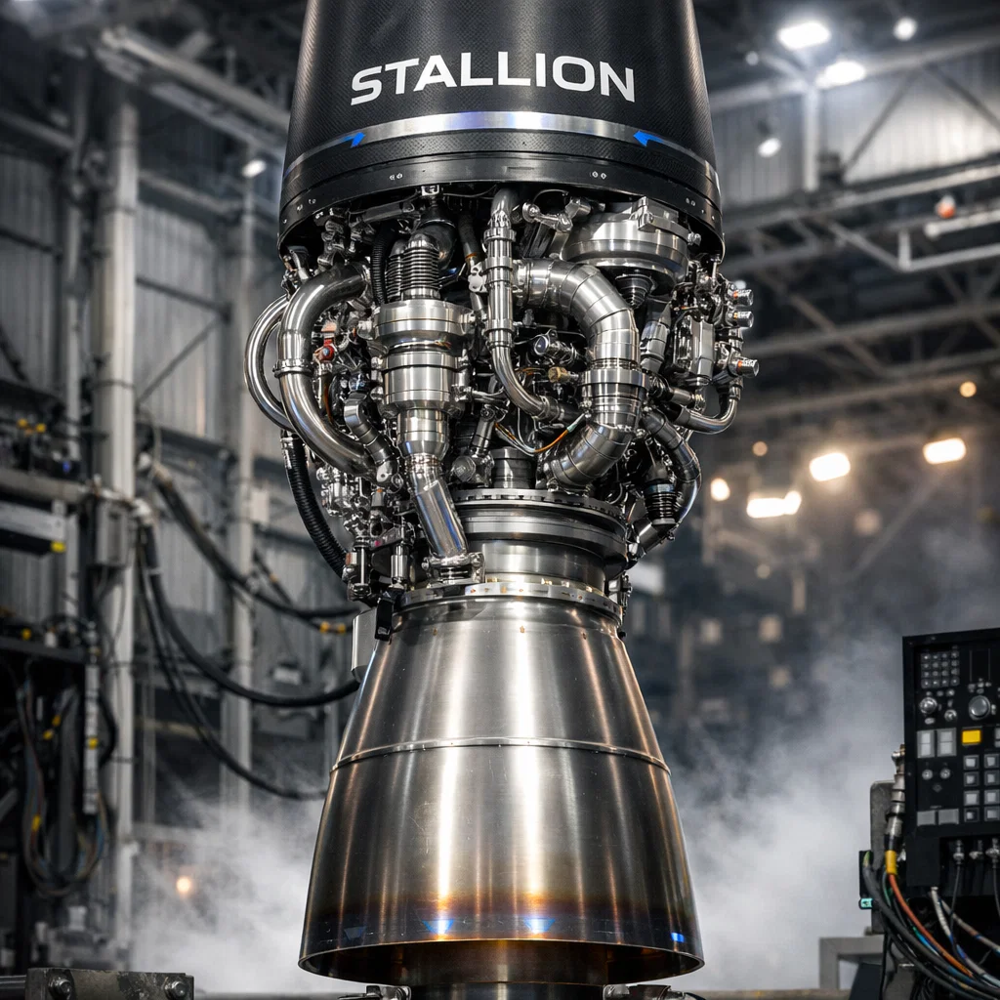

Reusable Booster Program

ZSI’s reusable booster will feature autonomous landing algorithms, grid-fin stabilization, and precision engine throttling.

Rapid turnaround capability will significantly reduce launch costs and enable higher mission cadence.